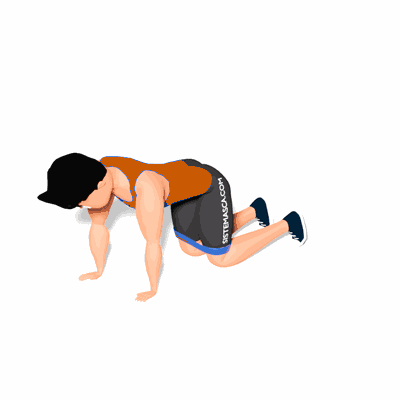

Abdução de Perna com Faixa Elástica

O exercício trabalha o fortalecimento da região dos glúteos. Como também a estabilização e flexibilidade do corpo.
Ficha Técnica
Tipo: Funcional
Grupo Muscular: Glúteo
Aparelho: Nenhum
Músculos: Nenhum
Como realizar
- Apoie o corpo sobre os joelhos e os punhos;
- Posicione a faixa de resistência acima dos joelhos. Pescoço, costas e quadris devem estar alinhados;
- Mova a perna esquerda para fora, esticando a faixa. O resto do corpo fica em parado: não gire para o lado;
- Retorne à posição inicial. Faça todas as repetições de um lado e depois troque.
 RC STORE
RC STORE